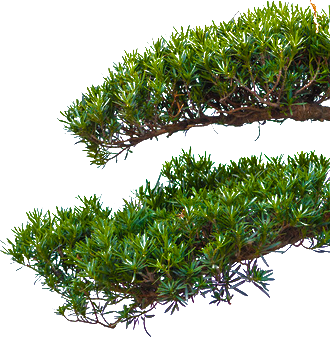
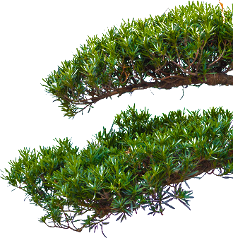

星の徽章（しるし）を背負いし者たちは、その日、仲間と共に闘う。
燃えさかる炎のように、激しい玄界灘の波のように、空を切り裂く雷のように、未来を照らす光のように、力強く生きる自然のように、闘う。
敵と闘うのではなく、己と闘う。そしてその姿を見てくれる人々がいる。
だからこそ私たちは、全力で闘い、運動会を創り上げる。
人々が思わず天を仰ぐほどの感動を創り上げる。
私たちなら、きっと。
Slogan
『暁天』
暁天とは、新たな1日への可能性を秘めた空、
澄み切った、夜明けの空だ。
大きな困難を経て創り上げるこの大運動会は、修猷の、
そして修猷生の、新たな物語の幕開けとなる。
我らの本気に、底力に、この1日にかける思いに、
そして、今日ここで、修猷の夜明けを飾るドラマの数々に、
仰天せよ。


Program
-

陸上α
一番最初に行われるリレー競技。ここで勝てるとブロックに勢いがつく。大運動会の幕開けを飾るのにふさわしい本気の走りには目を奪われること間違いなし！
8:27～8:42 -

棒引き
90秒の間に12本の棒を自陣に引き合う。真ん中にあるスペシャル棒は高得点を狙えるチャンス！女子たちの女を捨てた本気のバトルは見ごたえ十分！
8:46～8:56(予選)
15:06～15:16(決勝) -

タンブリング
男子全員で出場。各ブロックのテーマを演技で表現し、技の完成度や独創性を競う。危険が伴うからこそ、全員が真剣に取り組んでいる。７ピラや４タワーなどの大技を成功させたときの感動はひとしお。
8:58～9:31 -

綱引き
各ブロック男女80人ずつと最後尾のアンカーマンで綱を引き合う。大運動会トップクラスの規模で大迫力！「音頭取り」や「旗持ち」が選手たちを鼓舞する。
9:35～9:56(一回戦)
14:29～14:39(二回戦) -

大帽走
10人11脚で走り、縄跳びや台風の目、ジグザグ走りなどの仕掛けを超えていく。バトンの代わりに巨大な帽子をかぶって走るのが特徴。チーム全体の団結力が問われる。
10:00～10:10 -

騎馬戦
相手の大将騎を落馬させるか、終了時により多くの騎馬が残っていたブロックの勝利。緊張感漂う雰囲気や危険も覚悟で全力でぶつかる姿が魅力。クライマックスの大将騎同士の戦いには注目！！
10:12～10:33(予選)
14:43～15:04(決勝) -

創作ダンス
女子全員で出場。ブロックごとにオリジナルのダンスを披露し、その美しさを競う。統一感のある動きは大迫力。各ブロックのダンステーマはブロック紹介ページに掲載。
10:35～10:57 -

旗取り
相手の攻撃を防ぎつつ相手コートの３本の旗を倒しにいき、先にすべての旗を倒すか、より多くの点数を取ったブロックの勝利。昨年に新競技として登場したばかりの、注目の競技！
10:59～11:06(予選)
13:22～13:29(決勝) -

エール
演舞の「エーラー」と、チアダンスの「エールっこ」が、２か月かけて作り上げた完成度の高いエールで選手たちを応援。エーラーの迫真の演舞には心を動かされること間違いなし！
11:08～11:36(ブロックエール)
14:02～14:09(全体エール) -

応援コンテスト
通称「応コン」。ブロック生全員でパネルを操作し、絵や言葉を応援歌に乗せて表現する。今回は４年ぶりに声出しが解禁され、一体感も迫力もさらにパワーアップ！
12:27～13:07 -

陸上β
生徒から大人気の障害物競争。ぐるぐるバット、二人三脚、パン食い競争などの定番競技だけでなく、美白deリボンなどのおもしろ競技も。足の速さに関係なく得意分野で勝負でき、出る人も見る人も楽しいのが特徴。
13:34～13:57 -

陸上γ
各ブロックの代表選手が出場する、大運動会ラストの競技。スウェーデンリレーとブロック対抗リレーの２つに分かれている。ブロック対抗リレー最後のブロック長対決は必見！！
15:20～15:34 -
ピクトグラム©古谷櫂
Blocks
RED
超克とは困難や苦しみに打ち勝ちそれを乗り越えるという意味だ。今年行われたWBCをモチーフとした作品で、負けてもくじけずに挑み続ける選手たちのやる気や努力、選手達を精一杯応援する人々の熱気をまとめて侍魂として表現する。力強いダンス、コロコロ変わる表情、ドキドキする展開、見ていて心動かされるダンスに乞うご期待。
火鼠とは中国に伝わる火の中でも生き抜くことのできる伝説の鼠である。ここ数年に及ぶコロナウイルスの猛威の中を見事に生き抜き、新しい時代を築いていく修猷生と重なる部分がある。我々は数々の困難に直面した。そして困難の数だけ成長することができた。この経験を活かし、閉ざされた世界を維新に導くのは我々若者たちでありたい、そう思わせるタンブリングを作ってみせる。
2023年──我らの応コンは今、かつてないまでに昂る感情を以って修猷館応援コンテストの復活へと駆け続ける。共に激動の時代の終息へと進んでいこう。響炎の名のもと燃え上がる314の魂の響きを篤とご覧あれ。
鯉が急流を遡行しきれば龍になる。これは「登龍門」の語源である。私たちはいわば小さな鯉であった。しかし、この2ヶ月間でいくつもの関門と粘り強く闘い、成長し、赤ブロックの優勝、大運動会の成功へと導く龍と成る。そんな『闘う龍』達の勇姿に注目してほしい。
WHITE
己の全てを出し尽くし、感動を生み、今と昔の修猷健児をつなぐもの。繋いできた伝統に感謝し、理解した上で、俺らの大運動会にしよう。そして俺が掲げるバカッコイイ姿を本番全員で体現しよう。苦しい時、楽しい時に人のためにバカになり、この大運動会 白がやってやろうか。
1963年、自由で平等な世の中を目指してキング牧師は立ち上がった。差別されていた頃の悲嘆や恐怖、立ち上がるまでの葛藤、そして覚悟。キング牧師の姿を見て勇気を貰った周りの人々の感情の変化。これらをダンスを通して表現する。歴史的なキング牧師の演説"I have a dream"で語った彼の目指す世界を私たちが創りあげるという思いを伝えたい。
季節外れの花「狂花」は時代の荒波に逆らうこの競技を表している。「暁」は時代の夜明け前に戦う我らを表し「華」は輝き、情熱を表す。時代の荒波に逆らう我々の情熱は永遠に輝き続けるという意味である。このテーマの下、我々は「白虎隊」を表現する。彼らは大切な国のため、我々は大切な伝統のために戦い続けるのだ。
見る者聴く者そして応コンをするブロック生までもが気持ち良いほど豪快なWHITE応コン。俺らが修猷が揺れるような力強い声で轟かせる。俺らの応コンはWHITE、修猷のみならず、世界中にメッセージを届ける。さあ、応コンの幕開けだ。修猷を、いや世界を震わせろ。
「誠を尽くせば天に通ずる」。どんな困難や試練があっても、最善を尽くして立ち向かっていけば、いつかそれが実を結び、羽ばたく時がやってくる。逆境を乗り越える姿を表現した、WHITEのバックの力強さを感じてほしい。
BLUE
大航海時代には、ヨーロッパ諸国による地球規模の航海が行われていた。当時の航海は危険と隣り合わせ。だが、船乗りたちは、未知の領域に進出し、航路を拓くという野望を抱いていた。野望を内に秘めたままで終わらせず、偉業を成し遂げた船乗りたち。現代においても、大きなことを成そうとする時は強く大きな力が必要だ。その"強さ"を各々の思いに乗せ、青ブロック女子全員で体現する。
狂瀾怒濤とは、いかり狂ったようにさかまく荒波のことである。荒れ狂う波のごとく会場全体をのみこむタンブリングを作るという意味がこめられている。タンブリングは競技の中で、唯一男子全員が出場する競技であり、もっとも会場にいる観客の心を動かすことができる競枝だと思う。このテーマのもと最高のタンブリングを作り上げる。
声出し応コンの再生にあたり、コロナ禍から覚醒し、正規の形でできることへの感謝と共に、この代にしかできない、修猷史上最盛の応コンを作り上げる。ブロック生全員の青への想いが詰まった、熱い応魂！
「有志竟成」とは、志を持っていればいつか必ず実現できるという意味である。その雄大で勇ましい姿から、古来「勇魚｣と呼ばれる鯨は、我々の熱い思いを背負い、青ブロックを光輝く未来へと導く一筋の希望となる。
YELLOW
今年は輝こう！ではなく私がみんなを輝かせるという意味が込められている。
中国激動の時代と呼ばれた春秋戦国時代の城郭都市の様子を表現する。春秋時代とは、周が滅亡した後、中国は分裂し、秦の始皇帝による全国統一までの約550年間をいう。あえて、具体的な戦乱を取り挙げず、古代中国を代表する城郭都市に焦点を当てることで、その時代の国を超えた民衆に共通し、現代の私たちにも通じる心の変化に着目した。
「一天四海」とは、この世全て、全世界の意である。我々は第一隊形「千巌万壑」、第二隊形「白砂青松」、第三隊形「夏雲奇峰」の全三隊形を通して、陸・海・空それぞれの自然の風景を表現する。この世界に広がる美しい風光を感じ取り、是非思いを馳せて頂きたい。我々黄ブロックの覇気の発揚をとくとご覧あれ。
数年振りに解禁される声出し。観客の心を動かす応コンに不可欠な要素だ。文化の断絶は時にその文化の消滅を意味するが、そうはさせない 。この断絶をものともせず、むしろその反動で史上最高の応コンをブロック生全員で声を合わせて歌って―謳歌して―2023YELLOWが作り上げる 。
花が咲き乱れる様、光り輝き明らかに現れる様を表す熟語｢爛漫｣。嵐という字を使うことで嵐を切り抜けて黄ブロックが1番輝き、圧倒できるようにと願いを込める。また、2つのテーマを合わせると桜花爛漫となる。満開の花が咲き乱れ、非常に明るく華やかな様子を共に表現する。